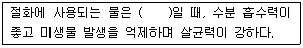

화훼장식기능사 (2010-07-11 기출문제)
1과목: 화훼장식재료
1. 화훼장식의 부재료에 대한 설명으로 옳은 것은?
- 철사는 재료를 지탱 할 수 있는 범위 내에서 가장 가는 것을 선택한다.
- 흡수성 플로럴 폼 사용시 제조회사의 상표명이 하부에 오도록 하여 사용한다.
- 유리용기를 사용할 경우 반드시 접착점토를 이용한다.
- 글루건은 글루팬에 비해 여러 사람이 공용으로 사용하기 용이하다.
(정답률: 70%)

2. 수경재배 식물 소재로 가장 적합한 것으로 나열된 것은?
- 반다, 수레국화
- 사라세니아, 스킨답서스
- 히아신스, 싱고니움
- 러브체인, 온시디움
(정답률: 57%)
3. 봄에 심는 알뿌리 화초로만 나열된 것은?
- 칸나, 달리아, 글라디올러스
- 칸나, 튤립, 수선화
- 글로시니아, 백합, 크로커스
- 칼라, 수선화, 글라디올러스
(정답률: 59%)
4. 줄기가 곧게 외대로 직립하는 성향의 식물로만 나열된 것은?
- 아이비, 스킨답서스, 옥시카르디움
- 클레마티스, 바위취, 접란
- 종려죽, 관음죽, 세이브리지 야자
- 프리지아, 칼라데아, 보스톤 고사리
(정답률: 67%)
5. 아마릴리스의 학명 표기가 바르게 된 것은?
- Hippeastrum hhybridum Hort
- Hippeastrum Hybridum Hort
- Hippeastrum Hhybridum Hort
- Hippeastrum hybridum Hort
(정답률: 66%)
6. 절화용 용기의 조건으로 거리가 먼 것은?
- 물과 꽃줄기를 충분히 담글 수 있어야 한다.
- 전체 꽃의 무게를 지탱 할 수 있는 무게를 가져야 한다.
- 줄기를 고정하기 위한 어떤 도구도 감출 수 있어야 한다.
- 장식 목적과 효과에 따라 배수구가 있는 경우가 일반적이다.
(정답률: 83%)
7. 숙근초에 해당되는 설명으로 맞는 것은?
- 종자로부터 발아하여 1년 이내에 모든 영양 및 생식생장 즉 생활환을 마치는 초본성 식물이다.
- 식물체의 일부인 뿌리, 지하경이 남아서 월동하고, 2년 이상 생장과 개화를 반복하는 목본류 이외의 식물이다.
- 개화에 춘화처리를 필요로 하고 파종 후 개화, 결실 등의 모든 생육을 마치는 데에만 1~2년 소요되는 식물이다.
- 대부분 종자번식을 하는 식물이다.
(정답률: 72%)
8. 가을에 파종하여 이듬해 꽃을 피우는 식물은?
- 샐비어
- 맨드라미
- 프리뮬라
- 해바라기
(정답률: 60%)
9. 잎의 형태가 원형인 식물은?
- 소나무
- 팬지
- 코레우스
- 한련화
(정답률: 57%)
10. 주로 절화용으로 사용되는 화훼류가 아닌 것은?
- 숙근안개초
- 극락조화
- 칼랑코에
- 오리엔탈나리
(정답률: 69%)
11. 화훼의 생태학적 분류방식이 아닌 것은?
- 기후형에 따른 분류
- 광도에 따른 분류
- 광주기에 따른 분류
- 형태에 따른 분류
(정답률: 67%)
12. 동양란으로 분류되는 것은?
- 춘란
- 심비듐
- 카틀레야
- 팔레놉시스
(정답률: 93%)
13. 갖춘꽃이 구비해야 할 필수적 기관이 아닌 것은?
- 암술과 수술
- 꽃받침
- 꽃잎
- 불염포
(정답률: 92%)
14. 다육식물의 특성이 아닌 것은?
- 잎이나 줄기가 다육질화 되어 있다.
- 수분을 저장하기위해 몸이 비대해진다.
- 거칠고 가시나 털이 있기도 하다.
- 물속에 잠겨서 생육하는 식물이다.
(정답률: 89%)
15. 화훼의 용어에 대한 정의가 틀린 것은?
- 화는 꽃을 의미한다.
- 훼는 생산되어지는 울타리 안을 의미한다.
- 절화, 분화, 종묘, 구근, 지피식물 등을 포함한다.
- 꽃, 줄기, 잎, 열매 관상가치가 있는 초본과 목본식물을 의미한다.
(정답률: 92%)
16. 코사지나 부케를 만들 때 식물 종류 별 철사감기 방법으로 틀린 것은?
- 프리지아 - 트위스팅 법(twisting method)
- 칼라 - 인서션 법(insertion method)
- 장미 - 피어스 법(pierce method)
- 아이비 - 헤어핀 법(hair-pin method)
(정답률: 71%)
17. 배양토의 종류 중 광물질 재료에 대한 설명으로 틀린 것은?
- 버미큘라이트 - 질석을 약 1,000˚C 정도로 가열하여 입자내의 공극을 팽창시킨 것
- 펄라이트 - 진주암을 약 1,000˚C 정도에서 부풀게 한 것
- 암면 - 약 1,500˚C에서 응용된 암석을 섬유상으로 가공한 것
- 하이드로 볼 - 1,800˚C 전˙후의 온도에서 현무암을 구운 다공질의 소재
(정답률: 69%)
18. 다음 중 공간장식 계획에서 가장 먼저 고려해야 하는 것은?
- 화훼장식의 양감 구성
- 화훼장식을 할 대상공간의 특징 및 규모 파악
- 화훼장식 재료의 색채와 질감 선택
- 화훼장식의 형태 결정
(정답률: 96%)
19. 식물 구조 및 식물의 생장과정을 자연스럽게 표현해 주는 자연적 스타일의 조형 형태는?
- 평행적 스타일
- 식물학적 스타일
- 정원식 스타일
- 자연 장식적 스타일
(정답률: 58%)
20. 꽃다발에 대한 설명으로 가장 거리가 먼 것은?
- 꽃을 모아 줄기가 모이는 부분을 묶어 다발로 만든 형태이다.
- 실생활에 꽃꽂이와 함께 많이 이용되는 절화장식물이다.
- 종류로는 노즈게이, 리스, 갈란드가 있다.
- 화형의 디자인에 따라 여러 가지 형태가 만들어 질 수 있다.
(정답률: 88%)
2과목: 화훼장식 제작 및 유지관리
21. 그 자체만으로는 구성요소로 인식하기에 너무 작은 소재들을 색, 질감, 형태 단위로 모아 빈틈없이 덩어리를 만들어 꽂는 기술을?
- 바인딩(binding)
- 프레이밍(framing)
- 클러스터링(clustering)
- 그룹핑(grouping)
(정답률: 67%)
22. 절화의 신선도를 높이고 수명을 연장하기 위하여 처리하는 약제의 명칭으로 가장 거리가 먼 것은?
- 장기처리제
- 절화보존제
- 수명연장제
- 선도유지제
(정답률: 62%)
23. 구성의 밑부분에 색다른 질감과 시작적인 비중을 더해 줌으로써 좀 더 강한 흥미와 외형적 안정성의 기반이 되는 화훼장식 표현기법으로 거리가 먼 것은?
- 테러싱(terracing)
- 파베(pave)
- 팔로잉(pillowing)
- 쉐도잉(shadowing)
(정답률: 51%)
24. 우리나라의 전통 화훼장식에 관한 설명으로 옳은 것은?
- 압화사는 고려시대의 꽃을 거두는 벼슬아치 이다.
- 꽃꽂이 방법이 소개된 임원십륙지는 홍석모의 저서이다.
- 한 화기에 두 개의 침봉을 사용한 것을 복형이라 한다.
- 주지의 삼각구성 이론은 동양사상인 천지인의 삼재(三才)사상에 근거를 두고 있다.
(정답률: 57%)
25. 장식적(decorative)구성에 대한 설명으로 옳은 것은?
- 좌우 비대칭의 구성으로 식물의 생태적 특성을 고려한다.
- 사실적이고 자유로운 질서가 있다.
- 식물의 생태적 특성보다는 주어진 형태 안에서 장식효과를 높이는데 주안점을 둔다.
- 선과 면의 강한 대비를 통해 긴장감과 고조를 유도한다.
(정답률: 85%)
26. 핸드타이드 부케(hand-tied bouquet)를 제작할 때 모든 줄기들이 교차하는 묶음점에 적용되는 기법으로 물리적·기능적으로 소재를 결합하기 위한 기법은?
- 밴딩(banding)
- 프레이밍(framing)
- 그룹핑(grouping)
- 바인딩(binding)
(정답률: 78%)
27. 다음 괄호에 들어갈 단어는?

- 알칼리성
- 약알칼리성
- 중성
- 약산성
(정답률: 66%)
28. 대칭 디자인에 대한 설명이 아닌 것은?
- 매우 안정된 형태이다.
- 견고하고 균형 잡힌 느낌을 준다.
- 기하학적인 중심축과 대칭축은 일치하지 않는다.
- 좌우 대칭이 되도록 시각적인 무게감이 균등하게 배열한다.
(정답률: 88%)
29. 다음 중 보광시(補光時)작물의 반응이 가장 민감한 생육시기는?
- 발아기
- 본엽이 출현하기 시작하는 생육초기
- 생육최성기
- 결실기
(정답률: 69%)
30. 벽면을 장식하기에 부적합한 형태는?
- 리스(wreath)
- 갈란드(garland)
- 사방화(四方花)
- 콜라주(collage)
(정답률: 85%)
31. 작품을 제작한 후 올바른 관리 방법이 아닌 것은?
- 절화보존제를 사용한다.
- 주기적으로 수분을 공급한다.
- 균형 면에서 안정성을 확인한다.
- 더울 때는 에어콘 바람을 직접 쐬어 온도를 낮춰 준다.
(정답률: 94%)
32. 교차선의 아름다움을 강조한 디자인에 대한 설명으로 거리가 먼 것은?
- 복수 생장점을 갖는다.
- 그루핑(grouping)의 기술을 이용할 수 있다.
- 장식적 구성이 가능하다.
- 일초점을 갖는다.
(정답률: 65%)
33. 리스(wreath)에 대한 설명으로 틀린 것은?
- 원형을 이루면서 디자인의 요소와 원리에 맞게 제작한다.
- 크기와 두께의 비율이 적절해야 아름답게 제작될 수 있다.
- 정적인 장식이며, 둥근 모양에 어울리게 느슨하게 제작해야 한다.
- 리스의 몸체는 리스 장식과 조화롭게 어울려야 한다.
(정답률: 89%)
34. 식사초대를 위한 유럽스타일의 테이블장식에 관한 설명으로 가장 거리가 먼 것은?
- 아침식사 테이블은 상쾌한 햇살에 어울리는 흰색이나 파란색 또는 악센트로 색상이 조금 있는 것을 살짝 곁들인다.
- 점심테이블은 짙고 옅은 색의 배합으로 고상하게 장식하거나 특별한 손님이나 관심이 가는 손님 앞에는 특별한 색을 하나 더하여 정성을 곁들인다.
- 가든(garden)테이블은 뜰에 피는 작은 꽃을 모아 꽂아 친숙한 느낌을 주고, 꽃이나 잎을 조금 높게 꽂아 바람에 살랑거리게 하여 시원함을 준다.
- 테이블은 초청자가 선호하는 꽃으로 하되 꽃향기가 강하고, 형태가 큰 꽃과 짙은 색 한 종류로 대범하게 연출한다.
(정답률: 90%)
35. 에틸렌의 설명으로 틀린 것은?
- 에틸렌은 무색, 무취의 기체로서 식물의 노화 호르몬이다.
- 에틸렌은 공기 중 불완전 연소의 부산물로서 발생하거나 성숙한 과일, 노화된 꽃에서 발생된다.
- 에틸렌에 대한 민감도는 고온에서 감소되기 때문에 보관 시 고온처리가 효과적이다.
- 에틸렌은 꽃봉오리와 꽃의 개화를 막고 시들게하며, 꽃잎의 탈리를 일으킨다.
(정답률: 86%)
36. 꽃다발을 만들 때 같은 종류나 같은 색끼리 대칭적이며, 둥근 공 모양 또는 원추 모양으로 원형이나 나선형의 모양으로 배열해 나가는 것은?
- 비더마이어(biedermeier)
- 크리센트(crescent)
- 암(arm)부케
- 케스케이드(cascade)부케
(정답률: 78%)
37. 절화, 절엽 등을 길게 엮어 만든 인공줄기의 장식물을 뜻하는 용어는?
- 고블릿(goblet)
- 갈란드(garland)
- 고블린(gobelin)
- 그리드(grid)
(정답률: 92%)
38. 플라워 디자인 기법 중에서 작품의 밑 부분에 비슷한 소재를 계단식으로 꽂는 기법은?
- 클러스터링(clustering)
- 프레밍(framing)
- 테라싱(terracing)
- 조닝(zoning)
(정답률: 84%)
39. 방사선 배열의 사방화 꽃꽂이 작품으로 테이블 센터피스(table centerpiece)장식으로 많이 활용되는 화형은?
- 초승달형
- 수평형
- 부채형
- 호가스형
(정답률: 72%)
40. 한국 전통 꽃꽂이 형태는?
- 원추형
- 경사형
- 폭포형
- 더치플래시미형
(정답률: 72%)
3과목: 화훼장식론
41. 철사처리법 중 후킹(hooking method)에 적합하지 않은 꽃은?
- 데이지
- 국화
- 금잔화
- 장미
(정답률: 71%)
42. 색에 의해서 사람의 관심을 끄는 주목성의 특징으로 옳은 것은?
- 명시성이 낮은 색은 주목성이 높아지게 된다.
- 따뜻한 난색은 차가운 한색보다 주목성이 높다
- 명도와 채도가 높은 색은 주목성이 낮다.
- 빨강, 노랑 등과 같은 원색 일수록 주목성이 낮다.
(정답률: 78%)
43. 식물이 사람에게 필요한 산소를 공급하고 이산화탄소를 흡수하여 공기를 전화시키는 기능은?
- 장식적 기능
- 환경적 기능
- 건축적 기능
- 심리적 기능
(정답률: 96%)
44. 화훼장식의 정의로서 가장 거리가 먼 것은?
- 식물을 주재료로 하여 장식한다.
- 실내 공간만을 대상으로 효율적으로 장식한다.
- 꽃과 식물을 이용한 입체조형 활동이다.
- 절화장식, 분식물장식, 실내정원 등을 포함한다.
(정답률: 90%)
45. 디자인에서 색채의 영향으로 틀린 것은?
- 색채는 시각적 균형을 유지시켜 준다.
- 한색과 난색을 같이 사용하여 시각적 깊이감을 강조한다.
- 색을 반복하여 사용하면 색의 통일감이나 조화의 기능이 떨어진다.
- 색채는 디자인의 원리들을 완성하기 위해 효과적으로 이용된다.
(정답률: 88%)
46. 선(line)에 대한 설명으로 거리가 먼 것은?
- 곡선은 유동적인 연속성을 가지고 있다.
- 수평선은 안정돼 보이는 반면 권태로운 단점도 있다.
- 사선은 강한 에너지의 운동성을 지닌다.
- 수직선은 높이가 강조되며 여성적이며 유연한 느낌을 준다.
(정답률: 88%)
47. 빈민가에 아름다운 화단을 조성하여 생활의 활력을 일으키려는 노력 등이 있다. 이는 화훼장식의 어떤 기능을 이용한 것인가?
- 교육적 기능
- 장식적 기능
- 환경적 기능
- 심리적 기능
(정답률: 65%)
48. 오스트발트 색상환의 색상배치에 기본이 된 이론은?
- 먼셀의 5원색설
- 헤링의 4원색설
- 영- 헬름홀츠의 3원색설
- 뉴턴의 프리즘설
(정답률: 54%)
49. 광원에 따라 물체의 색이 달라지는 광원의 특성을 무엇이라 하는가?
- 연색성
- 광도
- 전광속
- 조도
(정답률: 38%)
50. 건조시키는 도중에 꽃의 크기 변화가 가장 적은 건조법은?
- 열풍건조
- 동결건조
- 매몰건조
- 자연건조
(정답률: 81%)
51. 화훼장식품의 제작시 배색의 유의점으로 거리가 먼 것은?
- 색의 이미지와 기호, 계절, 유행을 고려하여 적용한다.
- 작품이 놓일 환경과 목적에 부합되어야 한다.
- 작품은 인공조명의 영향을 거의 받지는 않으므로 조명의 영향은 배제한다.
- 화기와 리본의 색도 전체 작품의 색과 고려하여 선택한다.
(정답률: 93%)
52. 서양의 화훼장식 역사에 대한 설명으로 옳은 것은?
- 르네상스 시대에 코누코피아가 만들어졌다.
- 바로크시대의 꽃은 용기 높이 2~3배로 고딕 건축물과 같이 꽂았다.
- 1,600년대에 빅토리아 스타일이 만들어졌다.
- 다수의 출판 서적, 기술을 지도하는 전문가 및 전문학교는 빅토리아 시대에 등장하였다.
(정답률: 76%)
53. 디자인 요소에 대한 설명으로 옳은 것은?
- 색채 - 반사된 광선들에 대한 눈의 시각적 반응으로 심리적 호소력이 없다.
- 선 - 디자인을 구성하기 위한 기본 단위로 작가의 감정을 전달하기 어렵다.
- 형태 - 높이와 넓이의 2차원적 모양으로 디자인의 중요한 요소다.
- 질감 - 사용되는 꽃 소재나 재료의 느낌으로 심미적인 시작전달효과가 있다.
(정답률: 78%)
54. 화훼장식의 속성으로 가장 거리가 먼 것은?
- 예술성
- 철학성
- 실용성
- 모방성
(정답률: 75%)
55. 통일성을 나타낼 수 있는 방법이 아닌 것은?
- 근접성
- 반복성
- 연계성
- 대비
(정답률: 79%)
56. 비례는 폭, 길이, 높이 등의 치수와 비교되는 분량의 측정관계이다. 가장 기본적인 비율로 3:5:8:13:··의 연속적인 분할 비율을 나타내는 것은?
- 황금비율
- 정상비율
- 과소비율
- 과대비율
(정답률: 86%)
57. 그리스·로마 시대에 유행했던 화훼장식물이 아닌 것은?
- 리스
- 갈란드
- 화관
- 노즈게이
(정답률: 85%)
58. 조선시대 강희안의 대표적인 원예서적은?
- 조선왕조실록
- 양화소록
- 산림경제
- 임원심육지
(정답률: 83%)
59. 건조소재의 보존방법으로 적절한 것은?
- 다습한 곳에서 보관한다.
- 직사광선이 비춰지는 곳에서 보관한다.
- 매몰건조에 의해 건조된 소재는 압력에 의한 손상에 유의해야 한다.
- 매몰건조에 의해 건조된 소재는 저장 중 습기를 제거할 필요가 없다.
(정답률: 78%)
60. 병치혼합의 특징에 해당되지 않는 것은?
- 회전혼합과 같은 평균혼합이므로 명도와 채도가 평균값으로 지각된다.
- 병치혼합의 원리를 이용한 효과를 베졸드(Willheln von Bzold)효과라고 한다.
- 색료 자체의 혼합이 아니기 때문에 가법혼색에 속한다.
- 채도가 떨어진 상태에서 중간색을 얻을 수 있다.
(정답률: 45%)